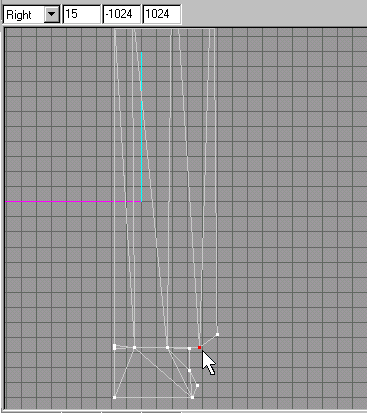
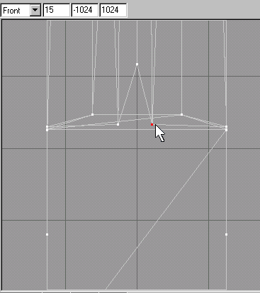
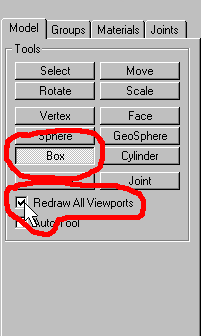
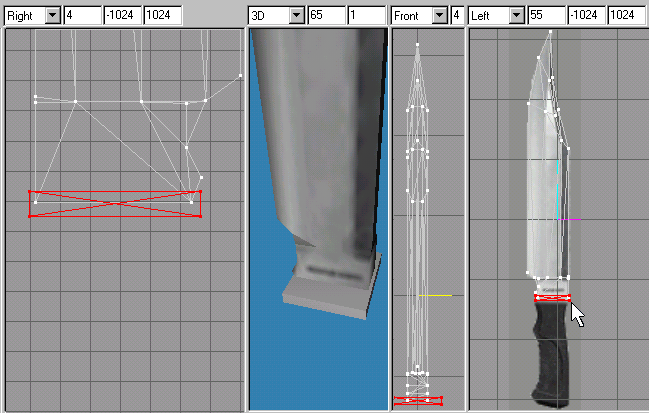

|
|
The knife blade is still not complete as we have to move to the front to sew it up. You might have noticed, that in the textured view of our 3D Window, that the cutting edge of the knife blade looks like it has a black part that would indicate that we are looking at from the backside. This looks the case on both sides of the knifes cutting edge on the lower portion. What happened here? When we created this section, we did not drag it out slightly to simulate the smooth tapering of a real knife. We will now fix this. (Good thing we didn't weld that spot! Or did you?) We will be closing the "Texture Coordinate Editor" at this point as it just is getting in the way. This time we need to check the "Ignore Backfaces" option by clicking in the check box. This will allow us to only select on vertex at a time that are align to each other. Select the vetex as pictured in Figure 1.35.

Figure 1.35 Single vertex selection to be moved
Now switching to the "Move" tool, you will lock down the "X, and "Y" axis. (Refer to Figure 1.9 for an example of locking the axis). Now in the "Front" viewport move this vertex to the left a bit. Switch the tool to "Select" again and in the "Left" viewport click in a blank area to unselect the last vertex and then select the opposite side of the same area vertex. Chose the "Move" tool once again and in the "Front" viewport move the vertex to the right. Look at Figure 1.36 to see the final positions of these 2 vertices.

Figure 1.36 Final position of the 2 vertices
Its time to hide the unwanted vertices again.They are shown in Figure 1.37. I will leave it up to hide them as you should now be used to this feature.

Figure 1.37 Selection of vertices to be hidden
I am going to let you have at the final sewing up of the front part of the blade. Other than it being tricky in some areas, it should be about the same steps involved as we did before. If you have forgotten, refer to Figures 1.30 - 1.34 and the accompanying text.
Very good! You have suffered through the tough part. Now it should be all down hill! You should have something that looks like in Figure 1.38 by now.

Figure 1.38 Completed knife blade
Now comes the time that we will make the handle portion of the knife. We will be creating what is called a primitive for the joining of the blade to the handle of the knife. First click the "Box" tool on the "Model" rollout. Check the "Redraw all Viewports" check box in the tools options to make all viewports to show the creation of the box to get a feel for the size needed as you creating it.(See figure 1.39).

Figure 1.39 Box tool selected with Redraw All Viewports option on
In the "Left" viewport, try to drag a box out in it like Figure 1.40 illustrates. This illustration shows all 4 viewports as it should appear you have finished with the creation of the box.

Figure 1.40 Box creation in all viewports
It should extend outwards a bit to the right and the left as the "Front" viewport shows. If its necessary, use the "Scale" tool and lock down the "Y," and "Z" axis and drag to the left or right to adjust it as necessary. (Refer to Figure 1.9 and the accompanying text).
|
|